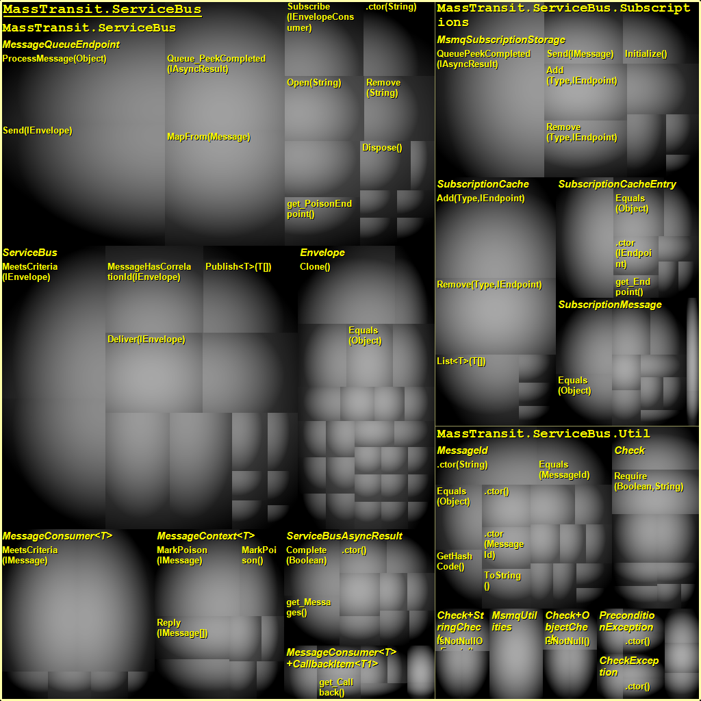
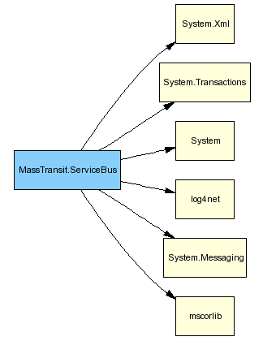

NDepend Report
Application name: Mass Transit
This report has been built on: 01/06/2008 11:10:11
in 00:13
by NDepend v2.6.3.1691 (Pro Edition)
Application Metrics
Assemblies Metrics
VisualNDepend View
Assemblies Abstractness vs. Instability
Assemblies Dependencies
Assemblies Dependencies Diagram
Assemblies build order
NDepend information and warnings
CQL Queries and Constraints
Types Metrics
Application Metrics
Number of IL instructions: 3330
Number of lines of code: 507
Number of lines of comment: 170
Percentage comment: 25%
Number of assemblies: 1
Number of classes: 22
Number of types: 33
Number of abstract classes: 0
Number of interfaces: 10
Number of value types: 1
Number of exception classes: 3
Number of attribute classes: 0
Number of delegate classes: 1
Number of enumerations classes: 1
Number of generic type definitions: 6
Number of generic method definitions: 13
Percentage of public types: 90.91%
Percentage of public methods: 90.73%
Percentage of classes with at least one public field: 9.09%
| Stat | # Occurrences | Avg | StdDev | Max |
|
Properties on Interfaces
| 10 Interfaces
| 2.1 | 4.99 | 17 properties on Asm:MassTransit.ServiceBus Interface:MassTransit.ServiceBus.IEnvelope |
|
Methods on Interfaces
| 10 Interfaces
| 3.7 | 4.67 | 17 methods on Asm:MassTransit.ServiceBus Interface:MassTransit.ServiceBus.IEnvelope |
|
Arguments on Methods on Interfaces
| 37 Methods
| 0.86 | 0.78 | 3 arguments on Asm:MassTransit.ServiceBus Interface:MassTransit.ServiceBus.INotifyMessageConsumer Method:Deliver(IServiceBus,IEnvelope,IMessage) |
|
Public Properties on Classes
| 22 Classes
| 2.32 | 4.29 | 20 public properties on Asm:NDepend.CodeStructureContainer.NAssembly Class:MassTransit.ServiceBus.Envelope |
|
Public Methods on Classes
| 22 Classes
| 6.77 | 5.61 | 26 public methods on Asm:MassTransit.ServiceBus Class:MassTransit.ServiceBus.Envelope |
|
Arguments on Public Methods on Classes
| 149 Methods
| 0.83 | 0.78 | 3 arguments on Asm:MassTransit.ServiceBus Class:MassTransit.ServiceBus.Subscriptions.SubscriptionMessage Method:.ctor(Type,String,SubscriptionMessage+SubscriptionChangeType) |
|
IL Instructions in non-abstract Methods
| 205 Methods
| 16.24 | 24.46 | 139 IL instructions in Asm:MassTransit.ServiceBus Class:MassTransit.ServiceBus.MessageQueueEndpoint Method:ProcessMessage(Object) |
|
|
|
Cyclomatic complexity on non abstract Methods
| 205 Methods
| 0.76 | 1.96 |
CC = 12 for Asm:MassTransit.ServiceBus Type:MassTransit.ServiceBus.MessageQueueEndpoint Method:ProcessMessage(Object) |
Assemblies Metrics
VisualNDepend View
Assemblies Abstractness vs. Instability

Assemblies Dependencies
Assemblies Dependencies Diagram
Blue : Assemblies of your application.
Yellow : Framework assemblies referenced by assemblies of your application.
Assemblies build order
NDepend information and warnings
01/06/2008 11:09:58 Begin analysis with NDepend v2.6.3.1691
01/06/2008 11:09:58 Retrieve dependencies of your application.
Don't load a previous analysis to compare with.
Assemblies loaded from {C:\WINDOWS\Microsoft.NET\Framework\v2.0.50727}
mscorlib.dll v2.0.0.0
System.Messaging.dll v2.0.0.0
System.dll v2.0.0.0
System.Transactions.dll v2.0.0.0
System.Xml.dll v2.0.0.0
Assemblies loaded from {C:\Home\MassTransit\trunk\bin}
MassTransit.ServiceBus.dll v1.0.0.0
log4net.dll v1.2.10.0
0 CQL constraint has been extracted from code.
01/06/2008 11:10:04 Analyse dependencies of your application.
No dependency cycle detected in assemblies referencement graph.
01/06/2008 11:10:10 End NDepend analyse.
01/06/2008 11:10:10 Duration: 00:00:12
01/06/2008 11:10:11 Building the report (standard).
CQL Queries and Constraints
{Source Code Quality constraints} Some CQL constraints are not satisfied.
{Code Quality constraints} Some CQL constraints are not satisfied.
{Performance constraints} Some CQL constraints are not satisfied.
{Design constraints} Some CQL constraints are not satisfied.
{Potentially unused code (dead code)} All CQL queries compile and all CQL contraints are satisfied.
{Optimal Encapsulation} Some CQL constraints are not satisfied.
{Naming constraints} All CQL queries compile and all CQL contraints are satisfied.
{Queries to understand code} All CQL queries compile and all CQL contraints are satisfied.
{Constraints extracted from code} All CQL queries compile and all CQL contraints are satisfied.
WARNING: The following CQL constraint is not satisfied. 10 methods on 320 tested match the condition. --> Group {Source Code Quality constraints}
// <Name>Methods poorly commented</Name>
WARN IF Count > 0 IN SELECT TOP 10 METHODS WHERE PercentageComment < 20 AND NbLinesOfCode > 10 ORDER BY PercentageComment ASC
// METHODS WHERE %Comment < 20 and that have at least 10 lines of code should be more commented.
// See the definition of the PercentageComment metric here http://www.ndepend.com/Metrics.aspx#PercentageComment
| methods | Percentage Comment | # lines of code (LOC) | Full Name |
| MessageDoesntHaveCorrelationId(IEnvelope) | 0 | 13 | MassTransit.ServiceBus.ServiceBus.MessageDoesntHaveCorrelationId(IEnvelope) |
| MeetsCriteria(IEnvelope) | 0 | 15 | MassTransit.ServiceBus.ServiceBus.MeetsCriteria(IEnvelope) |
| Deliver(IServiceBus,IEnvelope,IMessage) | 0 | 12 | MassTransit.ServiceBus.MessageConsumer<T>.Deliver(IServiceBus,IEnvelope,IMessage) |
| .ctor(IReadWriteEndpoint,ISubscriptionStorage) | 0 | 11 | MassTransit.ServiceBus.ServiceBus..ctor(IReadWriteEndpoint,ISubscriptionStorage) |
| Send(IEnvelope) | 0 | 19 | MassTransit.ServiceBus.MessageQueueEndpoint.Send(IEnvelope) |
| ProcessMessage(Object) | 0 | 21 | MassTransit.ServiceBus.MessageQueueEndpoint.ProcessMessage(Object) |
| MapFrom(Message) | 0 | 15 | MassTransit.ServiceBus.MessageQueueEndpoint.MapFrom(Message) |
| QueuePeekCompleted(IAsyncResult) | 5 | 18 | MassTransit.ServiceBus.Subscriptions.MsmqSubscriptionStorage.QueuePeekCompleted(IAsyncResult) |
| MeetsCriteria(IMessage) | 7 | 12 | MassTransit.ServiceBus.MessageConsumer<T>.MeetsCriteria(IMessage) |
| Queue_PeekCompleted(IAsyncResult) | 16 | 15 | MassTransit.ServiceBus.MessageQueueEndpoint.Queue_PeekCompleted(IAsyncResult) |
| Sum: | 28 | 151 | |
| Average: | 2.8 | 15.1 | |
| Minimum: | 0 | 11 | |
| Maximum: | 16 | 21 | |
| Standard deviation: | 5.016 | 3.1448 | |
| Variance: | 25.16 | 9.89 | |
WARNING: The following CQL constraint is not satisfied. 1 types on 108 tested match the condition. --> Group {Code Quality constraints}
// <Name>Types with too many methods</Name>
WARN IF Count > 0 IN SELECT TOP 10 TYPES WHERE NbMethods > 20 ORDER BY NbMethods DESC
// TYPES WHERE NbMethods > 20 might be hard to understand and maintain
// but there might be cases where it is relevant to have a high value for NbMethods.
// For example, the System.Windows.Forms.DataGridView standard class has more than 1000 methods.
// See the definition of the NbMethods metric here http://www.ndepend.com/Metrics.aspx#NbMethods
| types | # Methods | Full Name |
| Envelope | 26 | MassTransit.ServiceBus.Envelope |
| Sum: | 26 | |
| Average: | 26 | |
| Minimum: | 26 | |
| Maximum: | 26 | |
| Standard deviation: | 0 | |
| Variance: | 0 | |
WARNING: The following CQL constraint is not satisfied. 3 types on 108 tested match the condition. --> Group {Performance constraints}
// <Name>Types which instances are too big (SizeOfInst)</Name>
WARN IF Count > 0 IN SELECT TOP 10 TYPES WHERE SizeOfInst > 64 ORDER BY SizeOfInst DESC
// TYPES WHERE SizeOfInst > 64 might degrade performance (depending on the number of
// instances created at runtime) and might be hard to maintain.
// However it is not a rule since sometime there is no alternative
// (the size of instances of the System.Net.NetworkInformation.SystemIcmpV6Statistics
// standard class is 2064 bytes).
// See the definition of the SizeOfInst metric here http://www.ndepend.com/Metrics.aspx#SizeOfInst
| types | Size of instance | Full Name |
| PreconditionException | 72 | MassTransit.ServiceBus.Util.PreconditionException |
| CheckException | 72 | MassTransit.ServiceBus.Util.CheckException |
| PostconditionException | 72 | MassTransit.ServiceBus.Util.PostconditionException |
| Sum: | 216 | |
| Average: | 72 | |
| Minimum: | 72 | |
| Maximum: | 72 | |
| Standard deviation: | 0 | |
| Variance: | 0 | |
WARNING: The following CQL constraint is not satisfied. 7 types on 108 tested match the condition. --> Group {Performance constraints}
// <Name>Types that use boxing/unboxing</Name>
WARN IF Percentage > 5 IN SELECT TYPES WHERE IsUsingBoxing OR IsUsingUnboxing
// Thanks to generics, boxing and unboxing should be rare.
| types | # lines of code (LOC) | Full Name |
| Sum: | 347 | |
| Average: | 49.571 | |
| Minimum: | 21 | |
| Maximum: | 108 | |
| Standard deviation: | 31.117 | |
| Variance: | 968.24 | |
WARNING: The following CQL constraint is not satisfied. 10 types on 108 tested match the condition. --> Group {Design constraints}
// <Name>Classes that should be sealed</Name>
WARN IF Count > 0 IN SELECT TOP 10 TYPES WHERE IsClass AND NbChildren ==0 AND !IsSealed AND !IsStatic ORDER BY NbLinesOfCode
// Classes with no descendant should be sealed.
| types | # Children | # lines of code (LOC) | Full Name |
| PostconditionException | 0 | 3 | MassTransit.ServiceBus.Util.PostconditionException |
| PreconditionException | 0 | 3 | MassTransit.ServiceBus.Util.PreconditionException |
| Check+ObjectCheck | 0 | 6 | MassTransit.ServiceBus.Util.Check+ObjectCheck |
| Check+StringCheck | 0 | 6 | MassTransit.ServiceBus.Util.Check+StringCheck |
| MessageConsumer<T>+CallbackItem<T1> | 0 | 9 | MassTransit.ServiceBus.MessageConsumer<T>+CallbackItem<T1> |
| SubscriptionMessage | 0 | 17 | MassTransit.ServiceBus.Subscriptions.SubscriptionMessage |
| SubscriptionCacheEntry | 0 | 18 | MassTransit.ServiceBus.Subscriptions.SubscriptionCacheEntry |
| MessageContext<T> | 0 | 21 | MassTransit.ServiceBus.MessageContext<T> |
| ServiceBusAsyncResult | 0 | 22 | MassTransit.ServiceBus.ServiceBusAsyncResult |
| SubscriptionCache | 0 | 24 | MassTransit.ServiceBus.Subscriptions.SubscriptionCache |
| Sum: | 0 | 129 | |
| Average: | 0 | 12.9 | |
| Minimum: | 0 | 3 | |
| Maximum: | 0 | 24 | |
| Standard deviation: | 0 | 7.8797 | |
| Variance: | 0 | 62.09 | |
WARNING: The following CQL constraint is not satisfied. 10 methods on 320 tested match the condition. --> Group {Optimal Encapsulation}
// <Name>Methods that could be declared as 'internal' in C#, 'Friend' in VB.NET</Name>
WARN IF Count > 0 IN SELECT TOP 10 METHODS WHERE CouldBeInternal
| methods | # lines of code (LOC) | Full Name |
| op_Implicit(String) | 1 | MassTransit.ServiceBus.MessageQueueEndpoint.op_Implicit(String) |
| .ctor(IEndpoint,IMessage[]) | 6 | MassTransit.ServiceBus.Envelope..ctor(IEndpoint,IMessage[]) |
| .ctor() | 1 | MassTransit.ServiceBus.MessageConsumer<T>..ctor() |
| Complete(IMessage[]) | 3 | MassTransit.ServiceBus.ServiceBusAsyncResult.Complete(IMessage[]) |
| .ctor() | 3 | MassTransit.ServiceBus.ServiceBusAsyncResult..ctor() |
| .ctor(IServiceBus,IEnvelope,T) | 5 | MassTransit.ServiceBus.MessageContext<T>..ctor(IServiceBus,IEnvelope,T) |
| get_Message() | 1 | MassTransit.ServiceBus.MessageContext<T>.get_Message() |
| .ctor(MessageReceivedCallback<T1>,Predicate<T1>) | 3 | MassTransit.ServiceBus.MessageConsumer<T>+CallbackItem<T1>..ctor(MessageReceivedCallback<T1>,Predicate<T1>) |
| .ctor(MessageReceivedCallback<T1>) | 2 | MassTransit.ServiceBus.MessageConsumer<T>+CallbackItem<T1>..ctor(MessageReceivedCallback<T1>) |
| get_Condition() | 1 | MassTransit.ServiceBus.MessageConsumer<T>+CallbackItem<T1>.get_Condition() |
| Sum: | 26 | |
| Average: | 2.6 | |
| Minimum: | 1 | |
| Maximum: | 6 | |
| Standard deviation: | 1.6852 | |
| Variance: | 2.84 | |
WARNING: The following CQL constraint is not satisfied. 10 methods on 320 tested match the condition. --> Group {Optimal Encapsulation}
// <Name>Methods that could be declared as 'private' in C#, 'Private' in VB.NET</Name>
WARN IF Count > 0 IN SELECT TOP 10 METHODS WHERE CouldBePrivate
| methods | # lines of code (LOC) | Full Name |
| ProcessMessage(Object) | 21 | MassTransit.ServiceBus.MessageQueueEndpoint.ProcessMessage(Object) |
| .ctor(String) | 9 | MassTransit.ServiceBus.MessageQueueEndpoint..ctor(String) |
| Open(String) | 5 | MassTransit.ServiceBus.MessageQueueEndpoint.Open(String) |
| Remove(String) | 4 | MassTransit.ServiceBus.MessageQueueEndpoint.Remove(String) |
| op_Implicit(MessageQueueEndpoint) | 1 | MassTransit.ServiceBus.MessageQueueEndpoint.op_Implicit(MessageQueueEndpoint) |
| SerializeMessages(Stream,IMessage[]) | 1 | MassTransit.ServiceBus.MessageQueueEndpoint.SerializeMessages(Stream,IMessage[]) |
| .ctor(IReadWriteEndpoint,ISubscriptionStorage) | 11 | MassTransit.ServiceBus.ServiceBus..ctor(IReadWriteEndpoint,ISubscriptionStorage) |
| get_SubscriptionStorage() | 1 | MassTransit.ServiceBus.ServiceBus.get_SubscriptionStorage() |
| .ctor(IMessage[]) | 5 | MassTransit.ServiceBus.Envelope..ctor(IMessage[]) |
| set_ReturnTo(IEndpoint) | 1 | MassTransit.ServiceBus.Envelope.set_ReturnTo(IEndpoint) |
| Sum: | 59 | |
| Average: | 5.9 | |
| Minimum: | 1 | |
| Maximum: | 21 | |
| Standard deviation: | 6.0407 | |
| Variance: | 36.49 | |
WARNING: The following CQL constraint is not satisfied. 10 types on 108 tested match the condition. --> Group {Optimal Encapsulation}
// <Name>Types that could be declared as internal</Name>
WARN IF Count > 0 IN SELECT TOP 10 TYPES WHERE CouldBeInternal
| types | # lines of code (LOC) | Full Name |
| MessageQueueEndpoint | 108 | MassTransit.ServiceBus.MessageQueueEndpoint |
| ServiceBus | 83 | MassTransit.ServiceBus.ServiceBus |
| Envelope | 49 | MassTransit.ServiceBus.Envelope |
| MessageConsumer<T> | 28 | MassTransit.ServiceBus.MessageConsumer<T> |
| ServiceBusAsyncResult | 22 | MassTransit.ServiceBus.ServiceBusAsyncResult |
| MessageContext<T> | 21 | MassTransit.ServiceBus.MessageContext<T> |
| IEnvelope | 0 | MassTransit.ServiceBus.IEnvelope |
| IMessageConsumer<T> | 0 | MassTransit.ServiceBus.IMessageConsumer<T> |
| MessageReceivedCallback<T> | 0 | MassTransit.ServiceBus.MessageReceivedCallback<T> |
| IServiceBusAsyncResult | 0 | MassTransit.ServiceBus.IServiceBusAsyncResult |
| Sum: | 311 | |
| Average: | 31.1 | |
| Minimum: | 0 | |
| Maximum: | 108 | |
| Standard deviation: | 36.043 | |
| Variance: | 1299.1 | |
WARNING: The following CQL constraint is not satisfied. 2 types on 108 tested match the condition. --> Group {Optimal Encapsulation}
// <Name>Types that could be declared as 'private' in C#, 'Private' in VB.NET</Name>
WARN IF Count > 0 IN SELECT TOP 10 TYPES WHERE CouldBePrivate
| types | # lines of code (LOC) | Full Name |
| MessageConsumer<T>+CallbackItem<T1> | 9 | MassTransit.ServiceBus.MessageConsumer<T>+CallbackItem<T1> |
| Check+StringCheck | 6 | MassTransit.ServiceBus.Util.Check+StringCheck |
| Sum: | 15 | |
| Average: | 7.5 | |
| Minimum: | 6 | |
| Maximum: | 9 | |
| Standard deviation: | 1.5 | |
| Variance: | 2.25 | |
Types Metrics
rank: TypeRank (based on Google PageRank algo)
lcom/lcom HS: Lack of Cohesion Of Methods of a class (HS means Henderson-Sellers formula)
CC: Cyclomatic Complexity computed on source code
ILCC: Cyclomatic Complexity computed on IL code
Ca: Afferent Coupling
Ce: Efferent Coupling
ABC: Association Between Classes
NOC: Number Of Children
DIT: Depth in Inheritance Tree
A pink cell means that its value belongs to the 15% highest values for its metric
| Type | rank | # ILInst | # lines of code | # lines of comment | % comment | lcom | lcom(HS) | CC | ILCC | Ca | Ce | ABC | # Instance Methods | # Static Methods | # Prop | # Fld | NOC | DIT | Namespace |
| IEnvelope | 5.5 | 0 | 0 | 6 | 100 | - | - | 0 | - | 9 | 10 | - | 17 | - | 17 | - | 1 | - | MassTransit.ServiceBus |
| IEndpoint | 5.03 | 0 | 0 | 0 | 0 | - | - | 0 | - | 12 | 5 | - | 2 | - | 1 | - | 2 | - | MassTransit.ServiceBus |
| IMessage | 4.27 | 0 | 0 | 0 | 0 | - | - | 0 | - | 11 | 0 | - | 0 | - | 0 | - | 1 | - | MassTransit.ServiceBus |
| IEnvelopeConsumer | 1.87 | 0 | 0 | 0 | 0 | - | - | 0 | - | 4 | 3 | - | 2 | - | 0 | - | 1 | - | MassTransit.ServiceBus |
| Check | 1.83 | 108 | 18 | 0 | 0 | - | - | 15 | 8 | 4 | 12 | 12 | 0 | 9 | 2 | 0 | 0 | 1 | MassTransit.ServiceBus.Util |
| IServiceBus | 1.4 | 0 | 0 | 17 | 100 | - | - | 0 | - | 4 | 7 | - | 6 | - | 1 | - | 1 | - | MassTransit.ServiceBus |
| MessageId | 1.34 | 221 | 32 | 0 | 0 | 0.5 | 0.53 | 20 | 6 | 4 | 8 | 10 | 10 | 6 | 3 | 2 | 0 | 1 | MassTransit.ServiceBus.Util |
| IReadWriteEndpoint | 1.17 | 0 | 0 | 0 | 0 | - | - | 0 | - | 4 | 5 | - | 2 | - | 1 | - | 1 | - | MassTransit.ServiceBus |
| IServiceBusAsyncResult | 1.12 | 0 | 0 | 0 | 0 | - | - | 0 | - | 3 | 4 | - | 1 | - | 1 | - | 1 | - | MassTransit.ServiceBus |
| SubscriptionCacheEntry | 0.91 | 117 | 18 | 0 | 0 | 0.38 | 0.43 | 12 | 6 | 2 | 7 | 6 | 8 | 0 | 4 | 1 | 0 | 1 | MassTransit.ServiceBus.Subscriptions |
| Check+ObjectCheck | 0.64 | 33 | 6 | 0 | 0 | 0.33 | 0.5 | 4 | 1 | 2 | 5 | 2 | 3 | 0 | 0 | 1 | 0 | 1 | MassTransit.ServiceBus.Util |
| CheckException | 0.59 | 21 | 3 | 0 | 0 | - | - | 3 | 0 | 2 | 16 | 3 | 3 | 0 | 0 | - | 2 | 3 | MassTransit.ServiceBus.Util |
| ISubscriptionStorage | 0.55 | 0 | 0 | 12 | 100 | - | - | 0 | - | 3 | 7 | - | 3 | - | 0 | - | 2 | - | MassTransit.ServiceBus |
| Check+StringCheck | 0.55 | 34 | 6 | 0 | 0 | 0.33 | 0.5 | 4 | 1 | 1 | 5 | 3 | 3 | 0 | 0 | 1 | 0 | 1 | MassTransit.ServiceBus.Util |
| PreconditionException | 0.55 | 21 | 3 | 9 | 75 | - | - | 3 | 0 | 1 | 17 | 3 | 3 | 0 | 0 | - | 0 | 4 | MassTransit.ServiceBus.Util |
| PostconditionException | 0.55 | 21 | 3 | 9 | 75 | - | - | 3 | 0 | 1 | 17 | 3 | 3 | 0 | 0 | - | 0 | 4 | MassTransit.ServiceBus.Util |
| Envelope | 0.54 | 265 | 49 | 8 | 14.04 | 0.88 | 0.91 | 28 | 4 | 3 | 17 | 7 | 26 | 0 | 20 | 9 | 0 | 1 | MassTransit.ServiceBus |
| SubscriptionMessage+SubscriptionChangeType | 0.5 | 0 | 0 | 0 | 0 | - | - | 0 | 0 | 1 | 9 | 0 | 0 | 0 | 0 | 2 | - | 3 | MassTransit.ServiceBus.Subscriptions |
| INotifyMessageConsumer | 0.46 | 0 | 0 | 0 | 0 | - | - | 0 | - | 2 | 5 | - | 2 | - | 0 | - | 1 | - | MassTransit.ServiceBus |
| MessageContext<T> | 0.37 | 149 | 21 | 15 | 41.67 | 0.66 | 0.75 | 10 | 2 | 1 | 17 | 19 | 8 | 0 | 3 | 3 | 0 | 2 | MassTransit.ServiceBus |
| MessageConsumer<T>+CallbackItem<T1> | 0.37 | 45 | 9 | 0 | 0 | 0.42 | 0.5 | 6 | 0 | 1 | 2 | 1 | 6 | 0 | 4 | 1 | 0 | 1 | MassTransit.ServiceBus |
| MessageReceivedCallback<T> | 0.37 | 0 | 0 | - | - | - | - | 0 | 0 | 1 | 14 | 0 | 4 | 0 | 0 | - | 0 | 3 | MassTransit.ServiceBus |
| SubscriptionCache+<>c__DisplayClass2<T> | 0.33 | 11 | 1 | - | - | 0.5 | 1 | 1 | 0 | 1 | 6 | 3 | 2 | 0 | 0 | 0 | 0 | 1 | MassTransit.ServiceBus.Subscriptions |
| SubscriptionMessage | 0.28 | 114 | 17 | 0 | 0 | 0.57 | 0.63 | 13 | 6 | 1 | 10 | 5 | 10 | 0 | 6 | 2 | 0 | 1 | MassTransit.ServiceBus.Subscriptions |
| MessageQueueEndpoint | 0.28 | 727 | 108 | 6 | 5.26 | 0.8 | 0.86 | 48 | 43 | 1 | 41 | 98 | 10 | 6 | 2 | 8 | 0 | 1 | MassTransit.ServiceBus |
| ServiceBusAsyncResult | 0.24 | 119 | 22 | 46 | 67.65 | 0.77 | 0.85 | 12 | 3 | 1 | 14 | 6 | 10 | 0 | 5 | 5 | 0 | 1 | MassTransit.ServiceBus |
| IMessageConsumer<T> | 0.24 | 0 | 0 | 0 | 0 | - | - | 0 | - | 1 | 1 | - | 2 | - | 0 | - | 0 | - | MassTransit.ServiceBus |
| MessageConsumer<T> | 0.24 | 179 | 28 | 1 | 3.45 | 0.17 | 0.2 | 16 | 16 | 1 | 16 | 19 | 5 | 1 | 0 | 1 | 0 | 1 | MassTransit.ServiceBus |
| MsmqUtilities | 0.23 | 33 | 4 | 0 | 0 | - | - | 3 | 3 | 1 | 4 | 6 | 0 | 1 | 0 | - | 0 | 1 | MassTransit.ServiceBus.Util |
| MessageQueueEndpoint+<>c__DisplayClass2 | 0.23 | 10 | 1 | - | - | 0.5 | 1 | 1 | 0 | 1 | 5 | 2 | 2 | 0 | 0 | 0 | 0 | 1 | MassTransit.ServiceBus |
| ServiceBus | 0.15 | 576 | 83 | 0 | 0 | 0.73 | 0.78 | 37 | 34 | 0 | 36 | 45 | 13 | 1 | 2 | 5 | 0 | 1 | MassTransit.ServiceBus |
| SubscriptionCache | 0.15 | 206 | 24 | 0 | 0 | 0.17 | 0.2 | 14 | 11 | 0 | 19 | 27 | 5 | 1 | 0 | 1 | 0 | 1 | MassTransit.ServiceBus.Subscriptions |
| MsmqSubscriptionStorage | 0.15 | 320 | 51 | 7 | 12.07 | 0.65 | 0.73 | 18 | 11 | 0 | 26 | 42 | 8 | 1 | 0 | 6 | 0 | 1 | MassTransit.ServiceBus.Subscriptions |